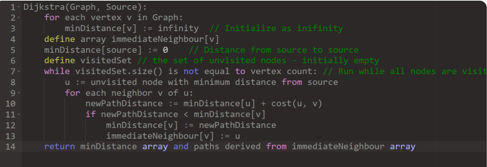
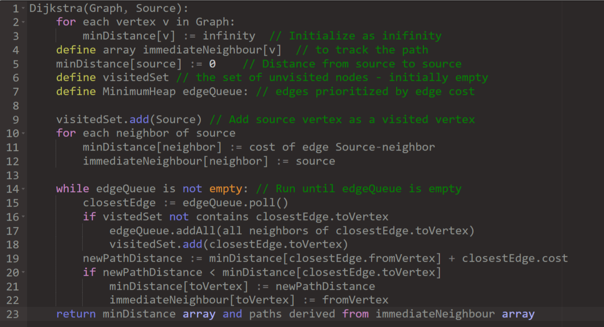
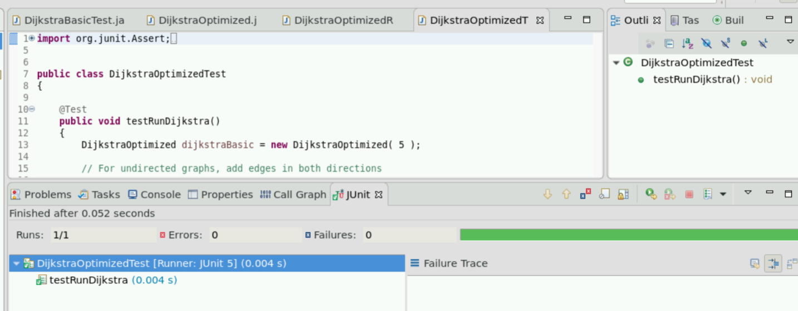

Created a simple Dijkstra's algorithm in Java with the Pseudocode below:

Then using resources online, I managed to optimise this code with the help of the new Pseudocode I created:

I used these to create Simple and Optimised versions Dijkstra's Algorithms as well as test classes for each and a runner file where inputs from a user can be entered.
Results:
This is a test run of the optimised dijkstra's algorithm

You can clearly tell that it does not take very long for this algorithm to run however this should be tested on a much larger scale where there are multiple checkpoints to be used.